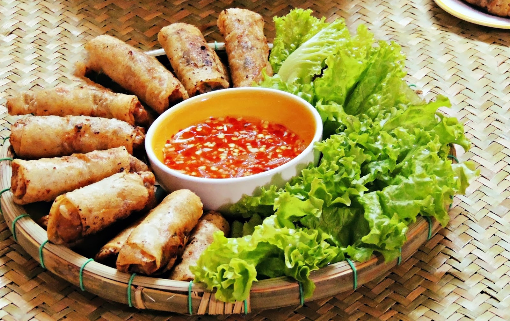
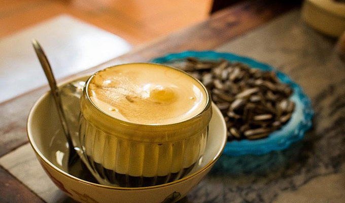
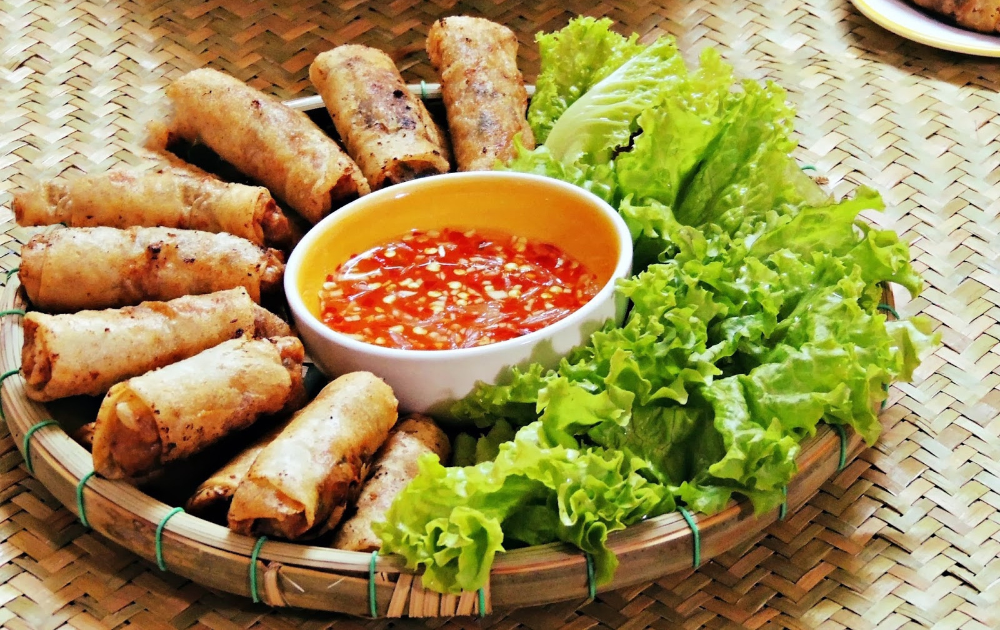
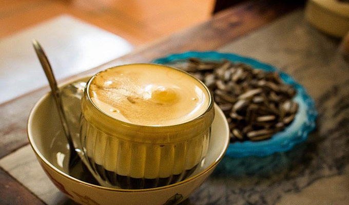

// 0
// 0
 // 1000
// 1000
 // 2000
// 2000
 // 3000
 // 4000

// 3000
 // 4000



ベトナムでは
ベトナムの有名の食べ物
フォーはベトナムの伝統的な料理であり、ベトナム料理の典型的な料理の一つと考えることもできます。
フォーの主な材料は、薄切りの牛肉または鶏肉のフォーヌードルとスープ です。
醤油、胡pepper、レモン、魚醤、唐辛子などのスパイスもあります。
これらのスパイスは、お客様の好みに応じて追加されます。
フォーは朝食や夜によく使用されますが、大都市ではこの料理は終日楽しめます。
ベトナム南部の地域には、タマネギ、もやし、コリアンダーの葉、バジルなどのハーブのプレートがあります。
コリアンダーの葉はフォーの格別です。
フォーは通常、ビーフまたはチキンヌードルスープですが、ポークヌードル、エビヌードル、カエルヌードルなど、他のバリエーションもありますが、
あまり成功していません。
フォーは有名なだけでなく、ベトナム料理も非常に豊富で多様です。
外国人向けのベトナム料理
ベトナム料理は非常に多様で豊かです。
年とともに、ベトナム料理は伝統的でモダンな味と完全に組み合わされています。
ベトナム人の珍味と味についてのメニューを称賛する多くのダイナーがベトナムに来ます。
したがって、ベトナム人の誇りの1つは食べ物です。
ベトナム料理は、ベトナムの国のすべてのベトナム人の一般的にスパイスと食習慣を混合する原則、食品加工を呼び出す方法です。
ほとんど違いがありますが、ベトナム料理は、少数民族のコミュニティで人気のある料理をすべて参照する最も重要な意味ですが、
ベトナムのコミュニティでは比較的一般的です。

Dinh Xuan Truong,番号：17520
専門学校コンピュータ教育学院ビジネスカレッジ
福岡市、南区向野２丁目１０番３０号
電話: (090) 123-4567
Gmail
VietFood@ckg.co.jp